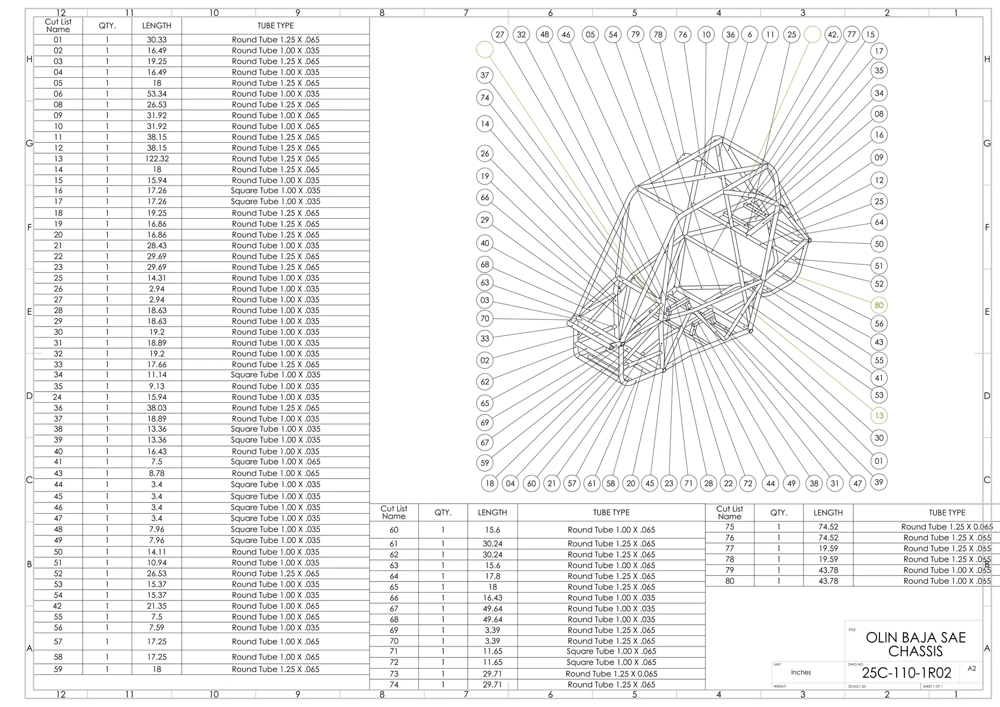
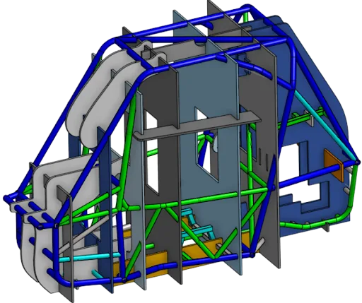
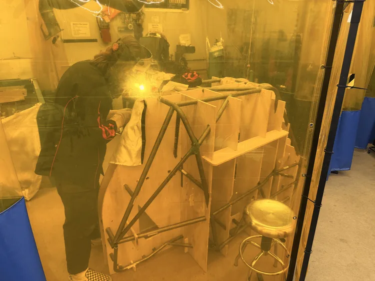
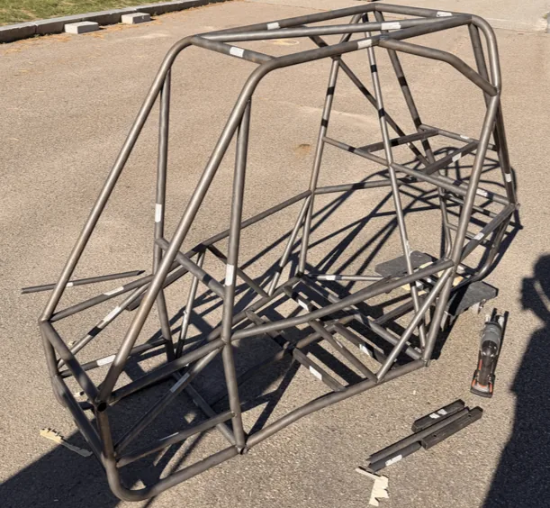
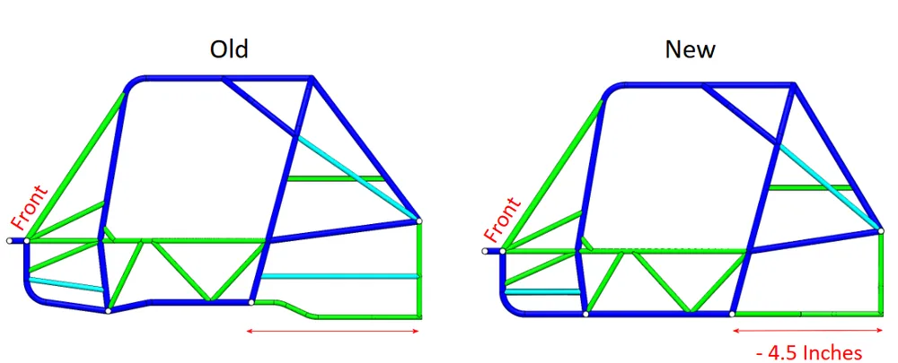
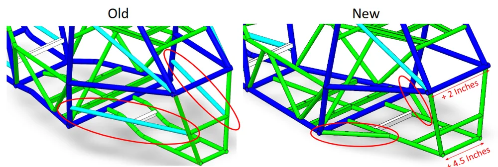
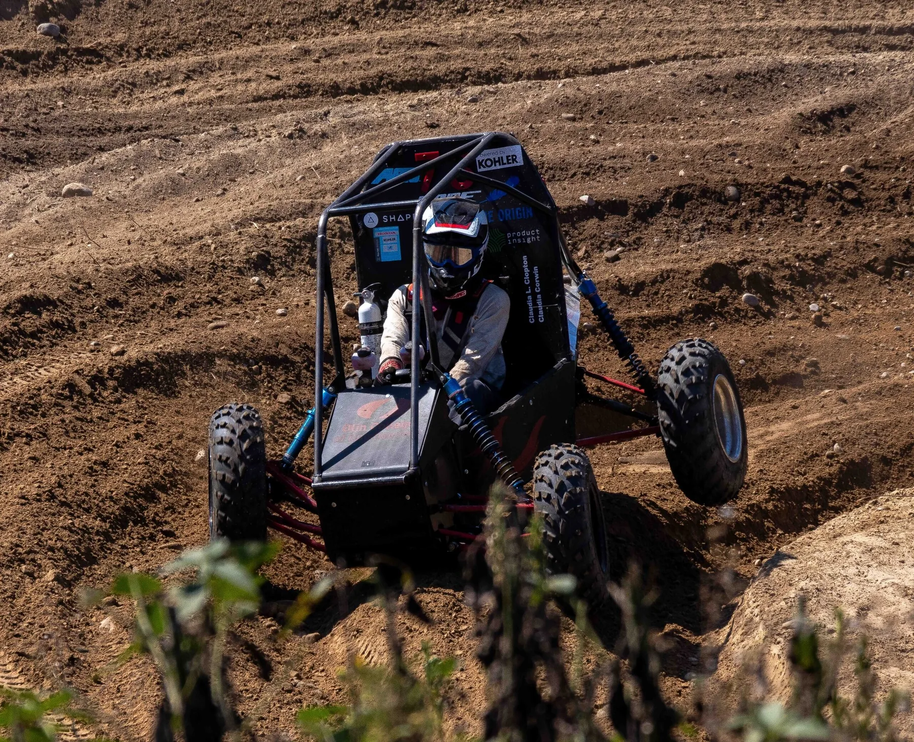

As a sophomore in Baja SAE I have served as Chassis Lead for over a year, managing the design, fabrication and assembly of the vehicle's structural foundation. I lead chassis fabrication, onboard new members to welding and manufacturing, and coordinate with the other subsystems so everything integrates cleanly. We are preparing to compete in September 2026 against universities from across the country in endurance, maneuverability and hill-climb events.
Competition and mission
Baja SAE challenges teams to design, build and race an off-road vehicle that can handle the most brutal terrain. Each year teams compete in dynamic events testing acceleration, maneuverability, hill climbing, and a grueling 4-hour endurance race. The vehicle has to survive jumps, mud, rocks and constant abuse while staying fast and reliable.
Role as Chassis Lead
As Chassis Lead for over a year, I oversee all aspects of chassis design, manufacturing and integration:
- Design leadership: lead CAD design of the tubular space-frame chassis in SolidWorks, ensuring compliance with SAE rules and integration with every subsystem.
- Fabrication management: coordinate chassis fabrication using TIG and MIG welding, jig design and tube-cutting operations.
- Bill of materials: manage the complete BOM for chassis components, order all tubes and materials, and cross-check specifications against SAE rulebook requirements.
- Member onboarding: train new members in welding techniques, fabrication processes, safety protocols and design-for-manufacturing principles.
- Cross-subsystem integration: coordinate with the suspension, powertrain and controls teams on mounting points and clearances.
- Structural analysis: run ANSYS FEA simulations to validate chassis strength, identify high-stress areas and optimize tube sizing.
Bill of materials management
I oversee the complete bill of materials for chassis fabrication, ensuring every component meets SAE specifications and is ordered on schedule.

The BOM includes detailed specifications for every tube in the chassis: material grade, wall thickness, outer diameter and length. Each component is cross-referenced with the SAE rulebook to ensure competition compliance. I coordinate with VR3 Tubes and other suppliers to source materials, manage delivery timelines and verify quality on receipt.
Structural analysis and ANSYS simulations
To validate chassis strength and optimize weight, I run finite element analysis in ANSYS. The simulations model worst-case loading scenarios including jumps, side impacts and rollover events.
The FEA results identify high-stress regions where additional gussets or larger-diameter tubes are needed. This data-driven approach lets us optimize the chassis for strength-to-weight, removing unnecessary mass while keeping structural integrity through competition abuse.
Fabrication and manufacturing
Chassis fabrication requires precision TIG welding, careful jig design and meticulous quality control so the final structure matches the CAD.
Welding jig design
To maintain accuracy during fabrication I designed custom welding jigs that hold the tubes in precise alignment during tack welding and final welding. These jigs are critical for making the chassis geometry match our CAD model.

TIG welding
All primary structural joints use TIG welding for maximum strength and penetration. I have developed advanced TIG skills for thin-wall AISI 1018 steel tubing, including heat management, filler-rod technique and post-weld inspection.


- Proper tungsten selection and electrode grinding for penetration control.
- Back-purging to prevent oxidation on the inside of the tube.
- Heat-input management to prevent warping and preserve material properties.
- Filler-rod selection and technique for full-penetration welds.
- Visual inspection and dye-penetrant testing to verify weld quality.
Key design improvements
Cockpit ergonomics and driver safety
I redesigned the cockpit section to improve driver ergonomics while maintaining rollover protection. The new design features:
- Lower seat position for an improved center of gravity and driver visibility.
- Adjustable pedal box to accommodate drivers of different heights.
- Reinforced roll hoop with side-impact protection exceeding SAE requirements.
- Improved ingress/egress clearance for faster driver changes during endurance.
Engine integration and serviceability
I worked closely with the powertrain team to optimize engine mounting and maintenance access. The chassis now includes:
- Removable engine-bay panels for quick CVT belt changes during competition.
- Vibration-isolated engine mounts to reduce fatigue on the chassis and components.
- Clearance between tubes to allow a worst-case engine swap.
Suspension geometry and clearance
Coordinated with the suspension team to optimize A-arm mounting points and maximize wheel travel:
- Relocated suspension pickup points to improve anti-dive and anti-squat characteristics.
- Increased wheel travel from 8" to 10" for better obstacle handling.
- Designed clearance for full suspension droop during jumps and rough terrain.
- Integrated shock-mounting tabs directly into the chassis for reduced weight.
Design evolution
Comparison of the previous chassis design against the current optimized design, showing improvements in weight, strength and serviceability.


Vehicle performance
Testing the Baja vehicle on challenging terrain to validate chassis strength and suspension integration.

Technical skills and expertise
Advanced welding
TIG welding AISI 1018 steel tubing, MIG welding mild steel, heat management and back-purging.
CAD design
SolidWorks assemblies, weldments and detailed fabrication drawings.
Structural analysis
ANSYS FEA for stress analysis, fatigue-life prediction and optimization.
Manufacturing
Tube notching, jig design, fixture fabrication and quality control.
Project management
Bill-of-materials management, supplier coordination and timeline planning.
Design for manufacturing
Optimizing designs for fabrication constraints and assembly.
Rules compliance
SAE Baja rulebook interpretation and design validation.
Team leadership
Training new members and coordinating cross-functional work.
Preparing for the competition
The team is in the final stages of preparation for the September 2026 Baja SAE competition. We are focused on:
- Completing chassis fabrication and final welding operations.
- Integrating all subsystems and performing full vehicle assembly.
- Extensive testing to validate reliability under competition conditions.
- Preparing technical documentation and design reports for the judges.
- Training drivers and practicing quick repairs for endurance-race pit stops.
- Finalizing the spare-parts inventory and competition logistics.
Impact and achievements
- Improved serviceability with redesigned engine-bay access panels.
- Developed standardized jig designs, improving fabrication accuracy and speed.
Key learnings
Leading chassis design and fabrication for Baja SAE has taught me the importance of design for manufacturing: creating designs that are not only optimal on paper but actually buildable with the equipment and expertise we have. The best design is worthless if the team cannot fabricate it accurately and consistently.
Working with new members has reinforced that knowledge transfer is critical for team sustainability. By documenting processes, creating training materials and mentoring newcomers, we make sure the team's knowledge base grows each year instead of being lost to graduation.
The iterative loop of CAD, simulation, fabrication, testing and refinement has shown me how engineering decisions play out in real-world performance. Seeing the chassis survive brutal testing validates our analysis, and failures give us valuable lessons for the next iteration.